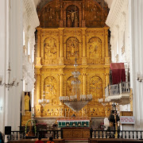
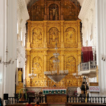

Famous Churches in Goa
Se Cathedral Church
Gallery
 

About
The Sé Catedral de Santa Catarina, known as Se Cathedral, is the cathedral of the Latin Rite Roman Catholic Archdiocese of Goa and Daman and the seat of the Patriarch of the East Indies. It is located in Old Goa, India
Address: Velha, Goa 403402
Status: Cathedral
Style: Portuguese-Gothic
Architectural styles: Portuguese colonial architecture, Portuguese Gothic architecture
Know more:
São Pedro Church
Gallery


About
The San Pedro Church also known as St. Peter's Church located in Old Goa. This is a very old Church built in 1543 and it is one of the eight parish churches of the old City of Goa, besides the Cathedral Parish. It is today the only survivor. It was built at the cost of the public treasury by workmen from Portugal. The Church was declared a national monument in the 1930's.
Address: Goa Velha, Goa 403110
Phone: 098231 97790
Know more:
Churches and convents of Goa
Gallery
About
Churches and convents of Old Goa is the name given by UNESCO to a set of religious monuments located in Goa Velha, in the state of Goa, India, which were declared a World Heritage Site in 1986. Goa was the capital of Portuguese India and Asia and an evangelization center from the sixteenth century.
Address: Goa Velha, Goa 403110
UNESCO Site Id: 234
Know more: